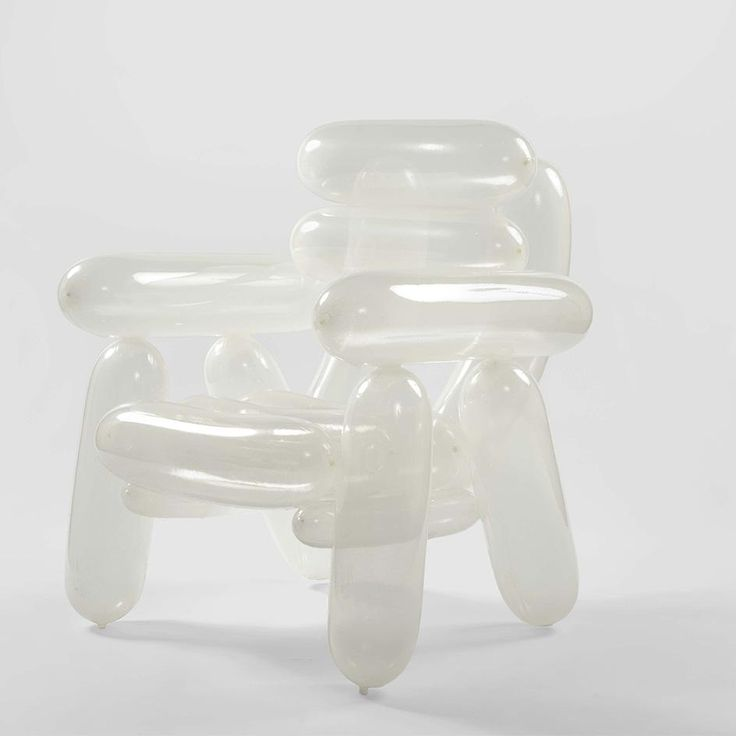

"Chair", Seungjin Yang

"Melting Ceramics", Livia Marin

"Retired Jerseys", Chris Bakay
El arte que desafía la funcionalidad
No te daremos una reflexión formada, te invitamos a que saques tus propias conclusiones
Preguntas Gatillo
"Chair", Seungjin Yang
"Melting Ceramics", Livia Marin
"Retired Jerseys", Chris Bakay